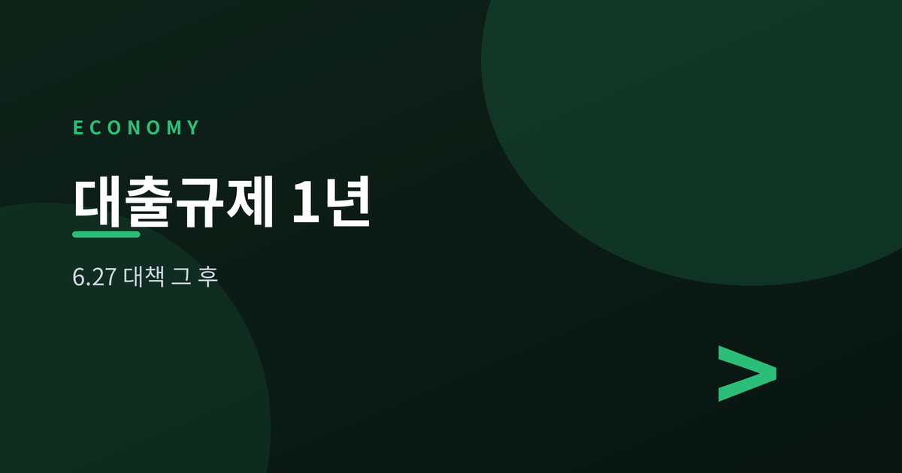
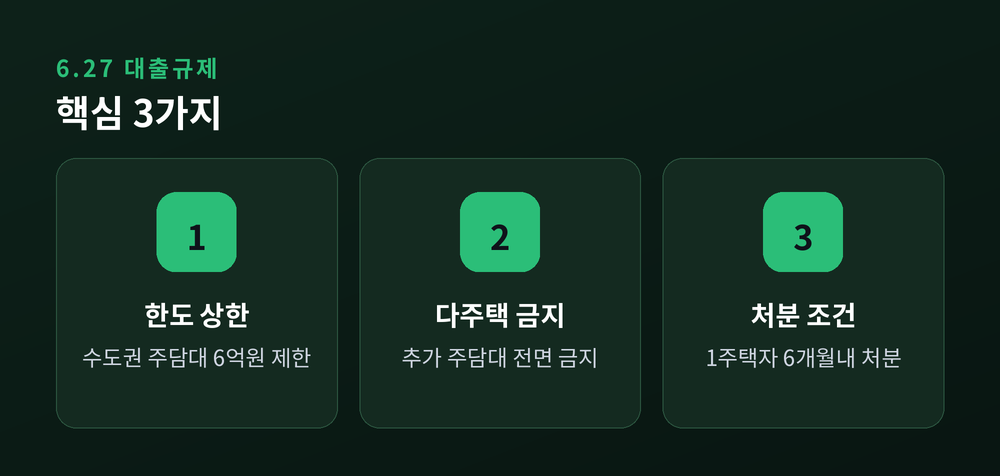
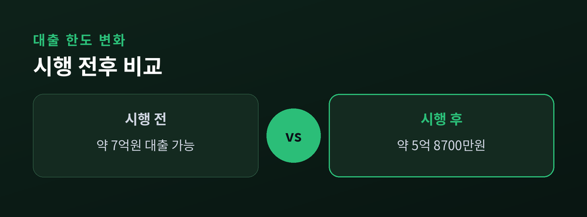
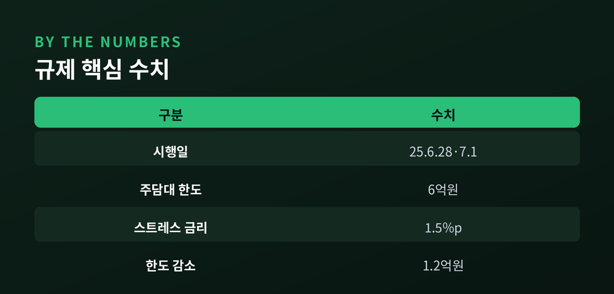

집값은 잡았나, 실수요자는 어떻게 됐나

지난해 6월 27일 발표된 가계부채 관리 강화 방안과 7월 1일 시행된 3단계 스트레스 DSR이 만 1년을 맞았습니다. 확인된 수치를 중심으로 짚어보겠습니다.
금융위원회는 2025년 6월 27일 수도권·규제지역 겨냥 가계부채 관리 강화 방안을 발표, 다음 날 6월 28일부터 시행했습니다. 핵심은 수도권·규제지역 주담대 한도를 6억원으로 제한하고, 다주택자의 추가 주택구입 목적 주담대를 전면 금지한 것입니다. 1주택자는 기존 주택을 6개월 내 처분해야 신규 주담대가 가능해졌고, 디딤돌·버팀목·보금자리론 등 정책 대출 공급도 축소됐습니다.

여기에 7월 1일부터 3단계 스트레스 DSR이 겹쳤습니다. 미래 금리 상승 가능성을 반영하는 '스트레스 금리'가 1.5%포인트로 높아졌고, 적용 범위도 제2금융권 가계대출 전반, 신용대출(1억원 초과분)까지 확대됐습니다.
"정부가 집값을 잡으려던 조치가 실수요자의 발목만 잡았다"는 지적과 "성급한 판단은 피해야 한다"는 반론이 함께 나옵니다.
두 규제가 겹쳐 한도 축소 효과가 커졌습니다. 연소득 1억원 차주 기준 스트레스 DSR 3단계 시행 전 대비 한도가 약 1억 2천만원 감소해, 실제 대출 가능액이 약 5억 8,700만원 수준으로 낮아졌습니다. 6·27 대책의 6억원 상한까지 겹치면 수도권 실수요자의 자금 부담이 동시에 늘어나는 구조입니다.


1년 후 평가는 엇갈립니다. 뉴데일리는 집값 상승세가 완전히 꺾이지 않았고, 현금 여력이 있는 매수자는 계속 움직인 반면 대출 의존도가 높은 실수요자만 밀려났다는 '수요 재편' 현상을 지적했습니다. 반면 한국개발연구원(KDI)은 정책 효과 판단은 아직 이르며 성급한 결론을 경계해야 한다는 입장입니다. 앞으로는 가계부채 총량 관리와 실수요자 보호 사이의 균형이 관전 포인트입니다. 이 글은 정보 제공이며 투자 권유가 아닙니다.